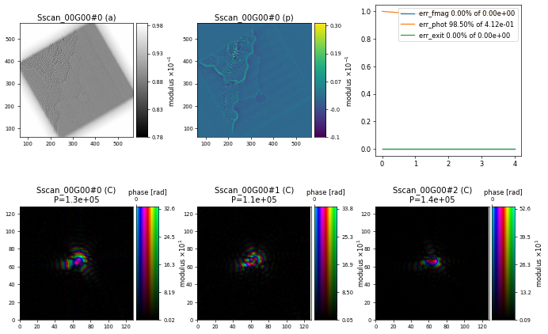

Working With Electron Data
Contents
7. Working With Electron Data#
Loading ptychographic electron data into PtyPy from an HDF5 file, running a phase retrieval engine and inspecting the output.
Working with electron ptychography data is very similar to working with X-ray data, the only critical part to consider is that the internal calculation of the electron wavelength is different from calculating the X-ray wavelength based on given photon/electron energies. The Hdf5Loader has a parameter electron_data that will take care of this difference if set to True when loading electron ptychography data.
7.1. The data#
In this example, we use an experimental data set collected at the ePSIC instrument at the Diamond Light Source on a thin layer of graphene. A subset of the experimental data including some meta information has been saved in an HDF5 file named “dls_epsic_graphene_small.h5” that was specifically created for the purpose of this tutorial. We can use the following code
import h5py, os
tutorial_data_home = "../../data/"
dataset = "small_data/dls_epsic_graphene_small.h5"
path_to_data = os.path.join(tutorial_data_home, dataset)
with h5py.File(path_to_data) as f:
print("The file {} has the following entries: \n".format(path_to_data))
print('\n'.join('\t* {0:<13} \tshape = {1:}'.format(k,f[k].shape) for k in list(f)))
to list all entires/keys saved at the root level
The file /global/homes/b/benedikt/workshop_data/small_data/dls_epsic_graphene_small.h5 has the following entries:
* data shape = (2893, 128, 128)
* det_distance_m shape = ()
* det_pixelsize_um shape = ()
* energy_kev shape = ()
* mask shape = (128, 128)
* posx_m shape = (2893,)
* posy_m shape = (2893,)
import h5py, os
tutorial_data_home = "../../data/"
dataset = "small_data/dls_epsic_graphene_small.h5"
path_to_data = os.path.join(tutorial_data_home, dataset)
with h5py.File(path_to_data) as f:
print("The file {} has the following entries: \n".format(path_to_data))
print('\n'.join('\t* {0:<13} \tshape = {1:}'.format(k,f[k].shape) for k in list(f)))
7.2. Loading the data#
For this electron ptychography example, the data loading instructions are similar to the previous example on using The HDF5 Loader but when reading the electron energy from the file, we need to specify electron_data=True
p.scans.scan_00.data.electron_data = True
p.scans.scan_00.data.recorded_energy = u.Param()
p.scans.scan_00.data.recorded_energy.file = path_to_data
p.scans.scan_00.data.recorded_energy.key = "energy_kev"
p.scans.scan_00.data.recorded_energy.multiplier = 1
The detector used in this example has some inactive (dead) pixels that we can consider by loading a binary mask from the HDF5 file
p.scans.scan_00.data.mask = u.Param()
p.scans.scan_00.data.mask.file = path_to_data
p.scans.scan_00.data.mask.key = "mask"
which will be used by the reconstruction engine to ignore those inactive pixels when doing the Fourier update. The convention in PtyPy is to set active (good) pixels to \(1\) and inactive (bad) pixels to \(0\). When loading the mask with the Hdf5Loader, it is possible to use mask.invert=True to invert the mask in case it saved differently in the file. The binary mask in this particular example looks like this
Since the diffraction center in the provided intensities might not necessarily be exactly at the centre of the images, it makes sense in most cases to let PtyPy automatically determine the center based on the data using auto_center=True
p.scans.scan_00.data.auto_center = True
7.3. Initial probe#
Similar to the previous example, a good starting guess for the illumination (probe) can be very important. For this example based on data collected at the ePSIC instrument at the Diamond Light Source, we use the following settings to model the optics of the electron microscope
p.scans.scan_00.illumination = u.Param()
p.scans.scan_00.illumination.model = None
p.scans.scan_00.illumination.photons = None
p.scans.scan_00.illumination.aperture = u.Param()
p.scans.scan_00.illumination.aperture.form = "circ"
p.scans.scan_00.illumination.aperture.size = 0.011
p.scans.scan_00.illumination.propagation = u.Param()
p.scans.scan_00.illumination.propagation.focussed = 0.1732
p.scans.scan_00.illumination.propagation.parallel = -1.0e-8
which has an aperture with a diameter of \(11 \,\mathrm{mm}\) and a focal length of \(173.2\,\mathrm{mm}\). These values have been calculated based on the given settings (e.g. semiangle) for the electron optics used in this particular data set. The sample plane was set at \(-10\,\mathrm{nm}\) upstream of the focus.
Note
Electron microscopy users might be more familiar with parameters such as the semiangle \(\alpha\) in order to define the optical setup and a future upgrade of PtyPy might allow users to directly set those more familiar parameters when defining the initial probe.
7.4. Reconstruction engine#
For many electron ptychography data sets, it makes sense to use the ePIE reconstruction engine as a first starting point. In this particular case, using alpha=0.9, beta=0.1 and object_norm_is_global=True seems to be a reasonable of parameters
p.engines = u.Param()
p.engines.engine = u.Param()
p.engines.engine.name = "EPIE_pycuda"
p.engines.engine.numiter = 20
p.engines.engine.numiter_contiguous = 1
p.engines.engine.alpha = 0.9
p.engines.engine.beta = 0.1
p.engines.engine.probe_update_start = 0
p.engines.engine.object_norm_is_global = True
resulting in the following reconstruction after 20 iterations of ePIE showing a section of the graphene sample with a hole in the center

Exercise
Modify the ePIE engine parameters and observe if/how it improves the quality or convergence of the reconstruction.
import ptypy, os
import ptypy.utils as u
# This will import the HDF5Loader class
ptypy.load_ptyscan_module("hdf5_loader")
# This will import the GPU engines
ptypy.load_gpu_engines("cuda")
# Root directory of tutorial data
tutorial_data_home = "../../data/"
# Dataset for this tutorial
dataset = "small_data/dls_epsic_graphene_small.h5"
# Absolute path to HDF5 file with raw data
path_to_data = os.path.join(tutorial_data_home, dataset)
# Create parameter tree
p = u.Param()
# Set verbose level to interactive
p.verbose_level = "interactive"
# Set home path and io settings (no files saved)
p.io = u.Param()
p.io.rfile = None
p.io.autosave = u.Param(active=False)
p.io.interaction = u.Param(active=False)
# Live-plotting during the reconstruction
p.io.autoplot = u.Param()
p.io.autoplot.active=True
p.io.autoplot.threaded = False
p.io.autoplot.layout = "jupyter"
p.io.autoplot.interval = 1
# Define the scan model
p.scans = u.Param()
p.scans.scan_00 = u.Param()
p.scans.scan_00.name = 'GradFull'
# Initial illumination (based on simulated optics)
p.scans.scan_00.illumination = u.Param()
p.scans.scan_00.illumination.model = None
p.scans.scan_00.illumination.photons = None
p.scans.scan_00.illumination.aperture = u.Param()
p.scans.scan_00.illumination.aperture.form = "circ"
p.scans.scan_00.illumination.aperture.size = 0.011
p.scans.scan_00.illumination.propagation = u.Param()
p.scans.scan_00.illumination.propagation.focussed = 0.1732
p.scans.scan_00.illumination.propagation.parallel = -1.0e-8
# Data loader
p.scans.scan_00.data = u.Param()
p.scans.scan_00.data.name = 'Hdf5Loader'
p.scans.scan_00.data.orientation = 0
# Read diffraction data
p.scans.scan_00.data.intensities = u.Param()
p.scans.scan_00.data.intensities.file = path_to_data
p.scans.scan_00.data.intensities.key = "data"
# Read positions data
p.scans.scan_00.data.positions = u.Param()
p.scans.scan_00.data.positions.file = path_to_data
p.scans.scan_00.data.positions.slow_key = "posy_m"
p.scans.scan_00.data.positions.slow_multiplier = 1
p.scans.scan_00.data.positions.fast_key = "posx_m"
p.scans.scan_00.data.positions.fast_multiplier = 1
# Read meta data: electron energy
p.scans.scan_00.data.electron_data = True
p.scans.scan_00.data.recorded_energy = u.Param()
p.scans.scan_00.data.recorded_energy.file = path_to_data
p.scans.scan_00.data.recorded_energy.key = "energy_kev"
p.scans.scan_00.data.recorded_energy.multiplier = 1
# Read meta data: detector distance
p.scans.scan_00.data.recorded_distance = u.Param()
p.scans.scan_00.data.recorded_distance.file = path_to_data
p.scans.scan_00.data.recorded_distance.key = "det_distance_m"
p.scans.scan_00.data.recorded_distance.multiplier = 1
# Read meta data: detector pixelsize
p.scans.scan_00.data.recorded_psize = u.Param()
p.scans.scan_00.data.recorded_psize.file = path_to_data
p.scans.scan_00.data.recorded_psize.key = "det_pixelsize_um"
p.scans.scan_00.data.recorded_psize.multiplier = 1e-6
# Read detector mask
p.scans.scan_00.data.mask = u.Param()
p.scans.scan_00.data.mask.file = path_to_data
p.scans.scan_00.data.mask.key = "mask"
# Determine diffraction center from the data
p.scans.scan_00.data.auto_center = True
# Define reconstruction engine (using ePIE)
p.engines = u.Param()
p.engines.engine = u.Param()
p.engines.engine.name = "EPIE_pycuda"
p.engines.engine.numiter = 20
p.engines.engine.numiter_contiguous = 1
p.engines.engine.alpha = 0.9
p.engines.engine.beta = 0.1
p.engines.engine.probe_update_start = 0
p.engines.engine.object_norm_is_global = True
# Run reconstruction
P = ptypy.core.Ptycho(p,level=5)